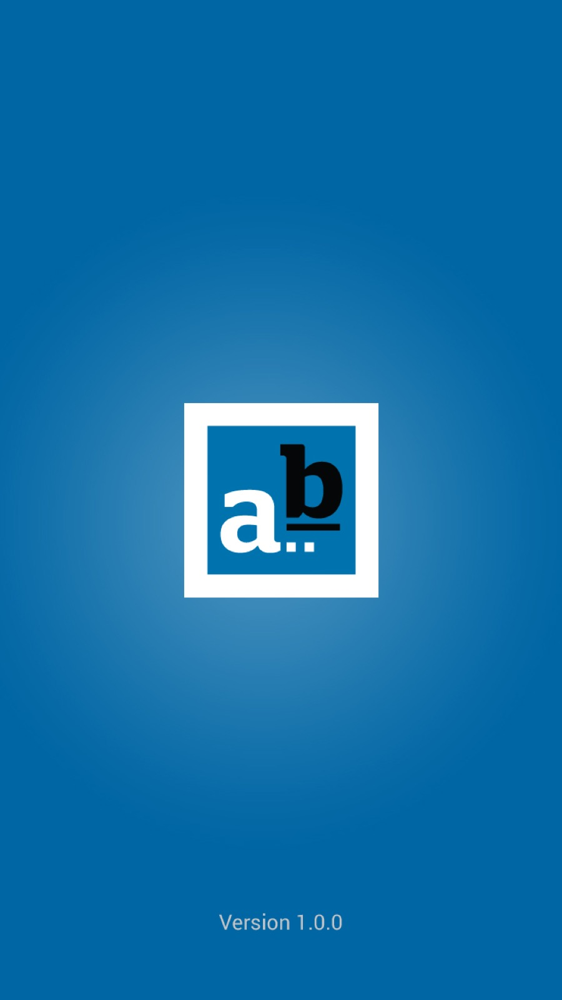

“Van A naar B” (from A to B)
Designed an offline training tool that helps people work on their personal goals.

Scope
To create a hybrid app tool that serves as a follow-up for an offsite training named "Van A naar B" (from A to B). The app is designed to support a coaching method by asking a daily question about how effectively you are striving to achieve your goals. As the app requires access to an external coach for training purposes, it must have external access to a third-party server. Therefore, it needs to be a responsive HTML5 website accessible on mobile devices.
The Solution
Worked closely with client stakeholders to comprehend the desired system flow and user requirements, creating task-flow screens that aligned with business objectives. Designed the final layout screens for each flow after ongoing iterations and feedback implementation, then handed over the final assets to development teams for further integration.
Rapid Prototyping
Worked closely with clients to understand the system workflow and anticipated user behaviour. Developed journey maps and end-to-end task flows that aligned with the business objectives.